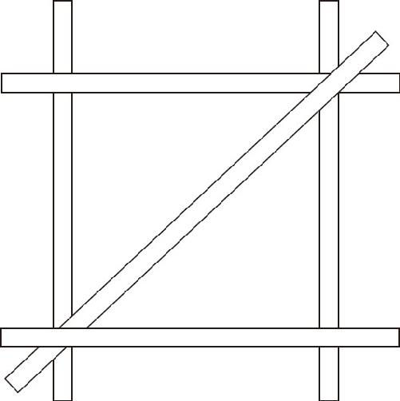
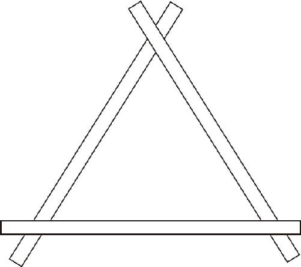
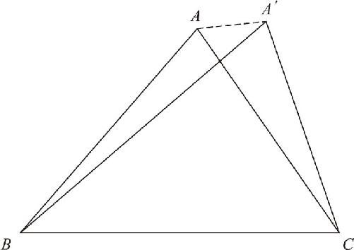

数学最精美、最奇妙的地方，就在于通过复杂的过程去证明看似简单的道理．因此需要抛出一个看似简单的问题，吸引你一起往下探索，这样才能够见证数学的奇妙．接下来，我们就再一次见证一个几何学的奇迹，那就是三角形的稳定性．
三角形的稳定性，也是我们在小学阶段学过的内容．我们当初是以这种方式理解的：如果我们把四根棍子头尾相接地钉在一起，这样就形成了一个四边形，可是这个四边形一点都不结实，如果我们左右摇动它，它就扭来扭去地乱晃，感觉就和陈旧的桌椅差不多．如果我们在这个四边形的斜对角再钉上一根木棍，这个四边形立刻就不会乱动了．（如图5－10所示）在实际生活中，我们也会通过这种办法来挽救那些快散架的桌椅，那么，这又是基于什么原理呢？

图5－10
三角形的稳定性问题，本质上是一个什么问题呢？假设我给了你三根棍子，你把它们首尾相接地钉在一起（如图5－11所示），为什么它就不能随便摇晃了呢？那是因为，把这三根棍子首尾相接，只能钉出这一个形状来．是不是这个道理呢？我们可以再对比一下四根木棍的情况：如果你用的是四根棍子，你就可以钉出长方形、平行四边形等无数个样式来，因为四边形的角度没有固定住，所以在棍子长度不变的条件下，这个四边形的四个角就随便拧．但如果给定了一个三角形的三条边，那么它的三个角也就随之固定下来了．因为三边固定，三个角也就固定了，于是我们也可以说，三边对应相等的两个三角形全等．在上述过程中，我们仍然只是通过模拟的方式对此做出解释说明．那么，这个定理成立吗？我们又该怎么证明它呢？

图5－11
这个证明过程，仍然需要用到反证法．假设有两个三角形△ABC 和△A′BC ，三边都是对应相等的，三个角不相等．为了判断这种情况到底是不是存在，我们可以先把它们两个的一条边BC 对齐，发现除了BC 这条边之外，其他的几个元素都没有重合，出现俩顶点A 和A′ ．由于三条边都是对应相等的，则AB ＝A′B ，AC ＝A′C ，因为A 和A′ 不重合，可以把它们连接起来．（如图5－12所示）证明如下：
∵AB ＝A′B ，
∴∠BAA′ ＝∠BA′A （等边对等角）．
同理，∵AC ＝A′C ，
∴∠CAA′ ＝∠CA′A （等边对等角）．
∵∠BAA′ 被AC 分为两部分，
∴∠BAA′ ＝∠BAC ＋∠CAA′ ，
∴∠BAA′ ＞∠CAA′ （整体大于部分），
∴∠BAA′ ＞∠CA′A （等量代换）．
但是，∠CA′A 同样被分为两部分，
∴∠CA′A ＝∠BA′C ＋∠BA′A ，
∴∠BAA′ ＜∠CA′A （整体大于部分）．

图5－12
由于在上文中证明过∠BAA′ ＞∠CA′A ，发生了矛盾，所以我们的假设是错误的，也就是说：如果三角形三边相等，则在底边重合的条件下，顶点A 和A′ 只要在同一侧，那么一定是重合的．既然是相互覆盖，证明两个三角形全等．三边对应相等，两个三角形全等的这个定理，简称“边边边”，在英文中，边的单词Side开头字母是S，角的单词Angle开头字母是A，所以这个定理又简称SSS，而与之相对的两边夹角的定理就叫SAS．三边对应相等是三角形全等的又一个重要定理，懂得了这个定理以后，古埃及人分地再也用不着牛皮了，原来他们用绳子圈一个四边形的土地，肯定是不靠谱的，因为四边形的角度无法固定，但是，如果用3根绳子圈一个三角形，那它的面积可就一定是相等的了．不仅如此，他们还学会了利用三边相等的关系，画出一个直角．这又是怎么回事呢？